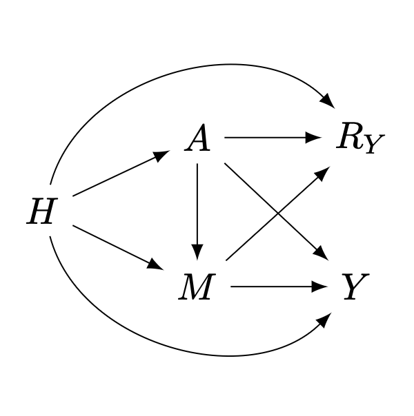
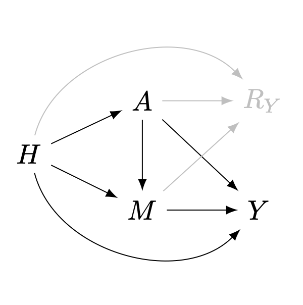
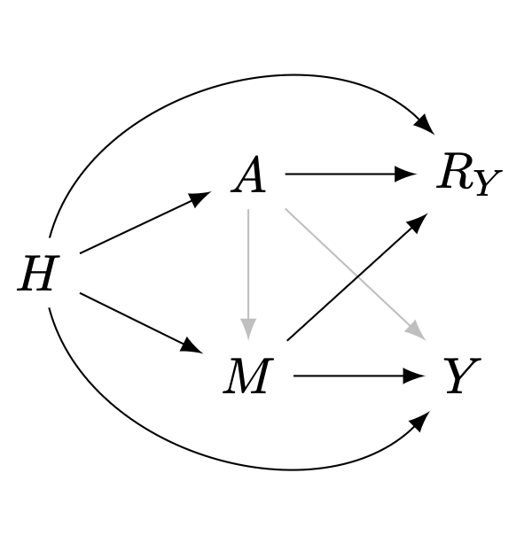

flowchart LR A["Observed-data distribution"] -- "recovery" --> B["Underlying distribution"] B -- "identification" --> C["Causal effect"] A -- "recovery" --> C
Recovering causal effects from post-treatment selection induced by missing outcome data
selection bias
mediation
regression
IPW
doubly-robust
TMLE
Solutions to the problem of effect recoverability from selection/missingness via regression adjustment and doubly-robust estimation
Objective
The final goal is to estimate the average treatment effect (ATE) and conditional average treatment effect (CATE) using observational data with missing values on the outcome variable
Conceptual diagrams
Diagram 1: relation between identifiability and recoverability:
flowchart LR D["Graphical criteria"] ==> E["IPW"] D ==> F["Regression"] D -.-> M["Mediation analysis"] F --> G["M-model"] F ==> H["Nested"] E ==> I["Doubly- robustness"] F ==> I I -.-> J["AIPW"] I ==> K["TMLE"] I -.-> L["DML"] M -.-> N["Triply- robustness"]
Diagram 2: relation between recoverability criteria and some estimation procedures:
Setting
Consider the following \(m\)-graph1, \(\mathcal{G}\), representing the causal relations among a set of random variables \(\mathcal{V}=\{H,A,M,Y,R_Y\}\), where:
- \(H\in\mathbb{R}^d\) is a vector of pre-treatment and context covariates
- \(A\in\{0,1\}\) is a binary exposure
- \(Y\) is the outcome of interest, with general support (univariate or multivariate, discrete or continuous)
- \(M\) is a mediator on the causal pathway from \(A\) to \(Y\), with general support
- \(R_Y\in\{0,1\}\) is an indicator of sample selection for \(Y\), i.e., for a given sample, \(R_Y=1\) means \(Y\) is observed; otherwise \(Y\) is missing (denoted with proxy \(Y^*=\emptyset\)).

Our goal is to estimate the average treatment effect (ATE), \(\psi\), in the target population, defined as:
\[ \psi = \Delta_a\mathbb{E}[Y\mid do(A=a)] := \mathbb{E}[Y\mid do(A=1)]-\mathbb{E}[Y\mid do(A=0)] \tag{1}\]
The problem of identifiability
When there is no sample selection nor missingness, or when missing is completely at random (MCAR), all arrows pointing to \(R_Y\) are absent. The \(m\)-graph representing the system correspond to a causal graph \(\mathcal{G}'\equiv\mathcal{G}[\overline{R_Y}]\), and samples are obtained from the observational distribution \(P(H,A,M,Y)\). This is the traditional setting motivating causal inference with observational data.

Under the assumptions embedded in the causal graph \(\mathcal{G}'\), and a special mutilation known as the back-door graph \(\mathcal{G}'[A\!-\!Y]\)2, \(\psi\) is nonparametrically identifiable from \(P(H,A,M,Y)\) via the back-door formula (Pearl 1995, 2012), as:
\[ \psi = \Delta_a\mathbb{E}_H\mathbb{E}[Y\mid H,A=a] \tag{2}\]
Given identifiability plus \(N\) i.i.d. samples from \(P(H,A,M,Y)\), a consistent estimator can be constructed using a regression model for the outcome \(\hat{Q}(H,A)=\hat{\mathbb{E}}[Y\mid H,A]\), and then proceeding with \(g\)-computation (Robins 1986):
\[ \hat{\psi} = N^{-1}\sum_{i=1}^{N}\Delta_a\hat{Q}(H_i,a) \tag{3}\]
The problem of recoverability
A (causal) parameter is said to be recoverable from the observed-data distribution \(P(H,A,M,Y^*,R_Y)\) 3 if it can be uniquely computed from it using the assumptions embedded in \(\mathcal{G}\) (and the necessary graph mutilation).
Under identifiability in the substantive model 4, there is an ample number of methods to recover joint/conditional distributions based on different statistical theories. Although not originally motivated by graphical models, they can be seen as ad hoc solutions under special graphical conditions (Mohan and Pearl 2021).
Table 1 presents a summary of literature review 5 benchmarking four methodological approaches in terms of:
- Graphical conditions for recoveravility: from hard (\(\bigstar\)) to easy (\(\bigstar\bigstar\bigstar\)) to fulfill/believe
- Flexibility in model specification: from parametric (\(\bigstar\)) to ML/nonparametric (\(\bigstar\bigstar\bigstar\))
- Statistical efficiency: from wider (\(\bigstar\)) to narrower (\(\bigstar\bigstar\bigstar\)) confidence/credible intervals
- Computational efficiency: from slow (\(\bigstar\)) to fast (\(\bigstar\bigstar\bigstar\)) computation/convergence
| Method | Graph cond. | Flex. spec. | Stat. eff. | Comp. eff. |
|---|---|---|---|---|
| Expectation-maximization (Dempster, Laird, and Rubin 1977) | \(\bigstar\) | \(\bigstar\) | \(\bigstar\bigstar\star\) | \(\bigstar\) |
| Multiple imputation (Rubin 1976, 1978) | \(\bigstar\star\) | \(\bigstar\bigstar\bigstar\) | \(\bigstar\bigstar\) | \(\bigstar\bigstar\) |
| Inverse probability weighting (Robins and Rotnitzky 1992; Robins, Rotnitzky, and Zhao 1994) | \(\bigstar\bigstar\bigstar\) | \(\bigstar\bigstar\) | \(\bigstar\) | \(\bigstar\bigstar\bigstar\) |
| Regression adjustment (Bareinboim, Tian, and Pearl 2014; J. Correa, Tian, and Bareinboim 2018) | \(\bigstar\bigstar\) | \(\bigstar\bigstar\bigstar\) | \(\bigstar\bigstar\bigstar\) | \(\bigstar\bigstar\bigstar\) |
Arguably, the best set of properties come from IPW and regression adjustment, due to their direct derivation from graphical criteria, which might extend the Rubin-MAR setting. Moreover, both solutions have important theoretical results from the theory of semiparametric estimation, and produce doubly-robustness when combined. These reasons have motivated syncretic estimators, such as:
| Method | Fast consistency | Plug-in for target | Bayesian version | # iter. steps |
|---|---|---|---|---|
| Augmented inverse probability weighting (AIPW) (Robins, Rotnitzky, and Zhao 1994) | No | No | No | 0 |
| Targeted learning (van der Laan and Rose 2011) | Yes | Yes | Yes, kinda | \(\geq 1\) |
| Debiased machine learning (DML) (Chernozhukov et al. 2018) | Yes | No | No | 0 |
Recoverability via IPW
Graphical conditions for recoverability via IPW (Mohan and Pearl 2014), with missing data on \(Y\), are:
- There is a back-door admissible set in the substantive model (\(H\))
- No self-selection: there are no directed arrows between \(Y\) and \(R_Y\)
- No open collider paths between \(Y\) and \(R_Y\) (open by variables involved in the query)
- (When there are multiple missingness mechanisms: \(R_V\cap R_{\text{mb}(R_V)}=\emptyset\))
Our \(m\)-graph \(\mathcal{G}\) (figure 1) allows recoverability, so we can express :
\[ \begin{aligned} p(Y\mid do(A)) &= \int\frac{ \text{d} H}{p(A\mid H)}\int \frac{\text{d} M}{\mathbb{P}(R_Y=1\mid H,M)}\, p(H,A,M,Y\mid R_Y=1) \\ &= \mathbb{E}_{H\mid R_Y=1}\left[\frac{p(A,Y\mid H,M,R_Y=1)}{p(A\mid H)\, \mathbb{P}(R_Y=1\mid H,M) } \right] \end{aligned} \tag{4}\]
Thus, the IPW-estimator of the ATE is:
\[ \hat{\psi}^{w} = N_1^{-1}\sum_{i=1}^{N_1}\frac{(2A^i-1)\,Y^i}{\hat{p}(A^i\mid H^i)\,\hat{\mathbb{P}}(R_Y=1\mid H^i,M^i) } \tag{5}\]
It requires two models:
- Treatment-assignment mechanism: \(\hat{p}(A^i\mid H^i)\). It does not involve the mediator \(M\)
- Selection mechanism: \(\hat{\mathbb{P}}(R_Y=1\mid H^i,M^i)\). It does involve the mediator \(M\)
Recoverability via regression adjustment
Working with samples from \(P(H,A,M,Y^*,R_Y)\) implies conditioning on \(R_Y=1\) (Bareinboim and Pearl 2012). In the \(m\)-graph of figure 1, \(\mathcal{G}\), such condition opens the following non-causal paths in the (proper) back-door graph:
- \(A\longrightarrow R_Y\longleftarrow H\longrightarrow Y\)
- \(A\longrightarrow R_Y\longleftarrow H\longrightarrow M\longrightarrow Y\)
- \(A\longrightarrow R_Y\longleftarrow M\longrightarrow Y\)
- \(A\longrightarrow R_Y\longleftarrow M\longleftarrow H\longrightarrow Y\)

Graphical conditions for recoverability via GAC (J. Correa, Tian, and Bareinboim 2018), with missing data on \(Y\), using an adjustment set \(Z\):
- All non-causal paths between \(A\) and \(Y\) are blocked by \(Z\) and \(R_Y\): \(Y\perp A\mid Z, R_Y\) in the (proper) back-door graph
- \(Z\) \(d\)-separates \(Y\) from \(R_Y\): \(Y\perp R_Y\mid Z\) in the (proper) back-door graph
- The adjustment set contains no forbidden nodes: \(Z\cap\text{fb}(A,Y;\mathcal{G})=\emptyset\)
No adjustment set fulfills all these critera. In particular, \(Z=\{H,M\}\) fulfills only the first two.
These criteria are incomplete, because they do not consider post-treatment selection influenced by mediators.
Fix: Our recoverability criteria via regression adjustment with missing data on \(Y\) using pre-treatment set \(H\) and forbidden set \(M\subset \text{fb}(A,Y;\mathcal{G})\):
- All non-causal paths between \(A\) and \(Y\) are blocked by \(H\): \(Y\perp A\mid H\) in the (proper) back-door graph of the substantive model
- \(H,M\) \(d\)-separate \(Y\) from \(R_Y\): \(Y\perp R_Y\mid H,M\) in the (proper) back-door graph
- The adjustment set contains no forbidden nodes: \(H\cap\text{fb}(A,Y;\mathcal{G})=\emptyset\)
This modification is not a revolutionary discovery. It is implied from the sequential factorization by Mohan and Pearl (2014), and from \(c\)-factorization by J. D. Correa, Tian, and Bareinboim (2019). Yet, the former does not address the causal query directly, and the latter might be a fairly complicated overshoot. A nice list of graphical criteria, as in the case without forbidden nodes, might be more useful for researchers. Besides, IPW tends to be the first option in applied research, maybe it is thought that in some contexts regression adjustment is not possible.
Under the modified criteria, we have that:
\[ \psi = \Delta_a\mathbb{E}_H\mathbb{E}_{M\mid H,A=a}\mathbb{E}[Y\mid H,A=a, M, R_Y=1] \tag{6}\]
This estimand can be expressed in two different ways, each using two models.
Solution 1: full mediator density-model:
\[ \psi = \Delta_a\mathbb{E}_H\left[\int \underbrace{\text{d}P(M\mid H,A=a)}_{\mathcal{M}_2}\, \underbrace{Q(H,a,M)}_{\mathcal{M}_1} \right] \tag{7}\]
One model for the expected-outcome model (with \(M\) as predictor): \(Q(H,A,M)=\mathbb{E}[Y\mid H,A, M, R_Y=1]\). The other model involved is a full mediator density-model: \(p(M\mid H,A)\)
Solution 2: nested/hierarchical regressions:
\[ \begin{aligned} &\mathcal{M}_1: & Q_1(H,A,M) &=\mathbb{E}[Y\mid H,A, M, R_Y=1] \\ &\mathcal{M}_2: & Q_2(H,A) &=\mathbb{E}_{M\mid H,A}\, Q_1(H,A,M) \\ & & \psi &= \Delta_a\mathbb{E}_H\, Q_2(H,a) \end{aligned} \tag{8}\]
The second model is not in the mediator support, but in the outcome support. \(\mathcal{M}_2\) averages the predictions of \(\mathcal{M}_1\), as a function of only \(H,A\).
This solution has a clear advantage: it does not require modeling the conditional density of \(M\), which is a hard job when such a variable is high-dimensional or combines discrete and continuous components. A little of math is required in the TMLE front.
Recoverability via mediation analysis
An alternative approach, closely related to regression adjustment, is mediation analysis. This is a viable approach in some circumstances, as the natural indirect effect (NIE) and the total direct effect (TDE) might be recoverable using Correa’s GAC, even when the ATE is not. The latter can be reconstructed as ATE = NIE + TDE. Yet, this approach has drawbacks relative to regression adjustment:
Identifiability conditions in the substantive model are stronger for mediation effects than for the ATE: sequential ignorability (and cross-world assumption). Not clear to me how violations impact recoverability.
TMLE for mediation effects become a bit more involved
An explicit model for \(M\) is required, but reformulations similar to solution 2 are possible (Xu, Liu, and Liu 2022)
Multiply-robustness
Combining IPW and regression adjustment solutions produces multiply-robustness. A doubly-robust estimator for the ATE can be constructed for solution 1: it will be consistent if all semiparametric models involved are correctly specified, or in one of these scenarios:
- \(p(M\mid H, A),\quad\) \(\mathbb{E}[Y\mid H,A, M, R_Y=1]\quad\) are both well specified
- \(p(A\mid H)\) and \(p(R_Y\mid A,H,M)\) are both well specified
Nested regressions (solution 2) would produce doubly-robustness too, with consistency if either:
- \(Q_2(H,A)=\mathbb{E}_{M\mid H,A=a}\mathbb{E}[Y\mid H,A=a, M, R_Y=1]\) is well specified
- \(p(A\mid H)\) and \(p(R_Y\mid A,H,M)\) are both well specified
Mediation analysis would produce triply-robustness, with consistency if all semiparametric models involved are correctly specified, or in one of these scenarios:
- \(p(M\mid H, A),\quad\) \(\mathbb{E}[Y\mid H,A, M, R_Y=1]\quad\) are all well specified
- \(p(A\mid H),\quad\) \(p(R_Y\mid A,H,M),\quad\) \(p(M\mid H, A)\quad\) are all well specified
- \(p(A\mid H),\quad\) \(p(R_Y\mid A,H,M),\quad\) \(\mathbb{E}[Y\mid H,A, M, R_Y=1]\quad\) are all well specified
Note that, using a misspecified model for \(M\) here (like when reducing its dimension with PCA, VAE or representation learning) leaves the estimator with worse robustness than simply using IPW, as it requires correct specification of \(A\), \(R_Y\) and \(Y\), whereas IPW only requires \(A\), \(R_Y\)
Path forward
Let us commit to:
- One missing mechanism: \(R_Y\)
- \(m\)-graph depicted in figure 1, so we have identifiability in the substantive model, and recoverability via IPW and regression
- TMLE (the super-learner is default, we could restrict to only splines or BART, Bayesian?)
- The
tmlepackage inRdeals with missing data in a very basic manner, combining dropping observations and single median-imputations: preprocessing missing data for TMLE
- Nested regressions, and full \(M\)-model only for one mediator
- Try simulations
References
Bareinboim, Elias, and Judea Pearl. 2012. “Controlling Selection Bias in Causal Inference.” In Proceedings of the Fifteenth International Conference on Artificial Intelligence and Statistics, edited by Neil D. Lawrence and Mark Girolami, 22:100–108. Proceedings of Machine Learning Research. La Palma, Canary Islands: PMLR. https://proceedings.mlr.press/v22/bareinboim12.html.
Bareinboim, Elias, Jin Tian, and Judea Pearl. 2014. “Recovering from Selection Bias in Causal and Statistical Inference.” Proceedings of the AAAI Conference on Artificial Intelligence 28 (1). https://doi.org/10.1609/aaai.v28i1.9074.
Bhattacharya, Rohit, Razieh Nabi, Ilya Shpitser, and James M. Robins. 2020. “Identification in Missing Data Models Represented by Directed Acyclic Graphs.” In Proceedings of the 35th Uncertainty in Artificial Intelligence Conference, edited by Ryan P. Adams and Vibhav Gogate, 115:1149–58. Proceedings of Machine Learning Research. PMLR. https://proceedings.mlr.press/v115/bhattacharya20b.html.
Chernozhukov, Victor, Denis Chetverikov, Mert Demirer, Esther Duflo, Christian Hansen, Whitney Newey, and James Robins. 2018. “Double/debiased machine learning for treatment and structural parameters.” The Econometrics Journal 21 (1): C1–68. https://doi.org/10.1111/ectj.12097.
Correa, Juan D., Jin Tian, and Elias Bareinboim. 2019. “Identification of Causal Effects in the Presence of Selection Bias.” Proceedings of the AAAI Conference on Artificial Intelligence 33 (01): 2744–51. https://doi.org/10.1609/aaai.v33i01.33012744.
Correa, Juan, Jin Tian, and Elias Bareinboim. 2018. “Generalized Adjustment Under Confounding and Selection Biases.” Proceedings of the AAAI Conference on Artificial Intelligence 32 (1). https://doi.org/10.1609/aaai.v32i1.12125.
Dempster, A. P., N. M. Laird, and D. B. Rubin. 1977. “Maximum Likelihood from Incomplete Data via the EM Algorithm.” Journal of the Royal Statistical Society: Series B 39: 1–38. http://web.mit.edu/6.435/www/Dempster77.pdf.
Dong, Yiran, and Chao-Ying Joanne Peng. 2013. “Principled Missing Data Methods for Researchers.” SpringerPlus 2: 1–17.
Hernán, Miguel A., Sonia Hernández-Díaz, and James M. Robins. 2004. “A Structural Approach to Selection Bias.” Epidemiology (Cambridge, Mass.) 15 (5): 615–25. https://doi.org/10.1097/01.ede.0000135174.63482.43.
Lewin, A., R. Brondeel, T. Benmarhnia, F. Thomas, and B. Chaix. 2018. “Attrition Bias Related to Missing Outcome Data: A Longitudinal Simulation Study.” Epidemiology 29 (1): 87–95. https://doi.org/10.1097/EDE.0000000000000755.
Mohan, Karthika, and Judea Pearl. 2014. “Graphical Models for Recovering Probabilistic and Causal Queries from Missing Data.” In Advances in Neural Information Processing Systems, edited by Z. Ghahramani, M. Welling, C. Cortes, N. Lawrence, and K. Q. Weinberger. Vol. 27. Curran Associates, Inc. https://proceedings.neurips.cc/paper_files/paper/2014/file/31839b036f63806cba3f47b93af8ccb5-Paper.pdf.
———. 2021. “Graphical Models for Processing Missing Data.” Journal of the American Statistical Association 116 (534): 1023–37. https://doi.org/10.1080/01621459.2021.1874961.
Pearl, Judea. 1995. “Causal Diagrams for Empirical Research.” Biometrika 82 (4): 669–88. http://www.jstor.org/stable/2337329.
———. 2012. “The Do-Calculus Revisited.” In Proceedings of the Twenty-Eighth Conference on Uncertainty in Artificial Intelligence, 3–11. UAI’12. Arlington, Virginia, USA: AUAI Press.
Perkins, Neil J, Stephen R Cole, Ofer Harel, Eric J Tchetgen Tchetgen, BaoLuo Sun, Emily M Mitchell, and Enrique F Schisterman. 2017. “Principled Approaches to Missing Data in Epidemiologic Studies.” American Journal of Epidemiology 187 (3): 568–75. https://doi.org/10.1093/aje/kwx348.
Robins, James. 1986. “A New Approach to Causal Inference in Mortality Studies with a Sustained Exposure Period—Application to Control of the Healthy Worker Survivor Effect.” Mathematical Modelling 7 (9-12): 1393–1512.
Robins, James, and Andrea Rotnitzky. 1992. “Recovery of Information and Adjustment for Dependent Censoring Using Surrogate Markers, Aids Epidemiology, Methodological Issues.” Proceedings of the American Statistical Association. Boston: Birkhauser, 24–33.
Robins, James, Andrea Rotnitzky, and Lue Zhao. 1994. “Estimation of Regression Coefficients When Some Regressors Are Not Always Observed.” Journal of the American Statistical Association 89 (427): 846–66.
Rubin, Donald B. 1976. “Inference and Missing Data.” Biometrika 63 (3): 581–92.
———. 1978. “Multiple Imputations in Sample Surveys: A Phenomenological Bayesian Approach to Nonresponse.” Journal of the American Statistical Association 73 (362): 384–95.
Seaman, Shaun R, and Ian R White. 2013. “Review of Inverse Probability Weighting for Dealing with Missing Data.” Statistical Methods in Medical Research 22 (3): 278–95.
van der Laan, M. J., and S. Rose. 2011. Targeted Learning: Causal Inference for Observational and Experimental Data. Springer Series in Statistics. Springer New York. https://books.google.no/books?id=RGnSX5aCAgQC.
Xu, Siqi, Lin Liu, and Zhonghua Liu. 2022. “DeepMed: Semiparametric Causal Mediation Analysis with Debiased Deep Learning.” Advances in Neural Information Processing Systems 35: 28238–51.
Footnotes
\(m\)-graphs generalize causal graphs in settings with sample selection (Hernán, Hernández-Díaz, and Robins 2004) and missing data (Mohan and Pearl 2021).↩︎
The back-door graph \(\mathcal{G}'[A\!-\!Y]\) is the graph resulting from removing in \(\mathcal{G}'\) the first arrow of all directed paths from \(A\) to \(Y\). It is termed the proper back-door graph in multi-exposure settings, and results from removing the first arrow of all directed and non-self-intersecting paths from \(A\) to \(Y\).↩︎
Sampling from \(P(H,A,M,Y^*,R_Y)\) is equivalent to sample from \(\{P(H,A,M,Y\mid R_Y=1),P(H,A,M)\}\)↩︎
Recoverability might be possible without identifiability in the substantive model, via (fairly complicated) \(c\)-factorizations (J. D. Correa, Tian, and Bareinboim 2019) or \(\phi\)-factorizations (Bhattacharya et al. 2020) related to the problem of \(g\)-identifiability↩︎
Literature review based on Seaman and White (2013), Dong and Peng (2013), Perkins et al. (2017), Lewin et al. (2018)↩︎